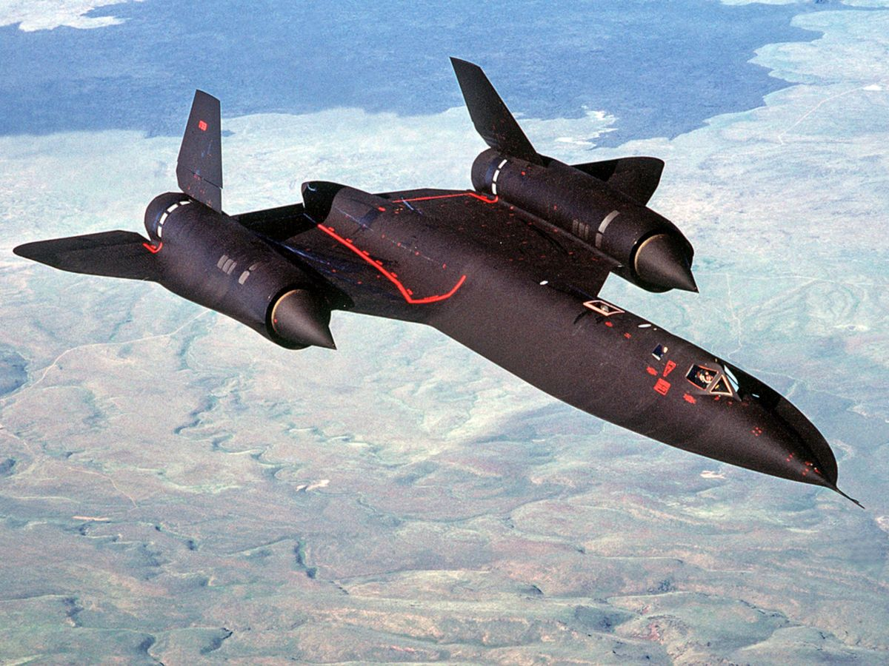

“No reconnaissance aircraft in history has operated in more hostile airspace or with such complete impunity than
the SR-71 Blackbird.” (Smithsonian, 2001). During its missions, it has been extremely successful without every
taking hostile damage. The reason of its success is not only due to one factor, which leads to my research question,
how has the Lockheed SR-71 Blackbird’s stealth technology been so efficient throughout its operations? In this essay,
I will be covering its main factors and their functions that make this jet “stealthy”. Although it was a success, I will
explain why such an aircraft has been withdrawn from the military permanently and why it will likely not be used again.
The key idea of this is to understand how advanced this aircraft was, especially during the time of its creation.

Introduction
The Lockheed SR-71 Blackbird is a reconnaissance aircraft which was introduced in January 1964 and headed by
Clarence L. (Kelly) Johnson (Rich, 1995). The purpose of this aircraft was to obtain intel within the enemy
territory, but not to sustain itself during combat, thus it does not have any artillery equipped onto it. This
jet is two-seated and has a twin-engine. Approximately 85% of the plane is made out of titanium and the rest is
made of polymer composite materials. This also has a vertical tail fin which is made of a laminated plastic-type
material, has a Pratt and Whitney J58 (JT11D-20B) turbojet engine and uses a Jet Propellant 7 (JP-7) fuel type,
which is extremely volatile. This jets maximum speed is approximately 2200mph, which is equivalent to 3 times the
speed of sound, and it can maintain this velocity for 90min, to which after it will require refuelling. This can
also achieve an altitude of 16 miles and roam safely around this region. All these factors are details that influence
in the “Stealth Technology” of this aircraft. Considering how impressive this aircraft is for its time, how does it
perform so well undercover and what makes it so stealthy?
Analysis and Discussion
As stated in the introduction, the maximum speed the SR-71 Blackbird can achieve is about 2200mph, but what makes
this aircraft attain such velocity? According to the National air and space museum, “The speed and agility of the
SR-71 is largely due to the unique design of the engine inlets. To handle the dramatic changes in air speed and
pressure, air literally had to be slowed down to subsonic speeds before entering the jet engines.” (Smithsonian, 2010).
Since this jet has a supersonic engine, it can reach speeds greater than the speed of sound. As the aircraft achieves
a speed greater than the speed of sound, the aircraft crashes through air, which then creates a shockwave and causes
a “Sonic boom”. The engine inlets sharp tip causes a disruption in the shockwave, causing it to “break” and reduce
the pressure in front of the engine, which also reduces the drag effect on the jet. This also increased the velocity
of the air entering the engine, as when a fluid enters through a smaller cross-sectional area, its speed will increase,
which then increases the air flow through the engine, making the aircraft travel at faster speeds.
During the design of the SR-71 Blackbird, gaps between the aircraft were deliberately included. This reason being
that during flight, the aircraft would reach temperatures up to 300°C at Mach 3. Since this would heat up, the metal
of this jet would expand. The limitation on this is the fact that the fuel would leak through the gap of the aircraft
when on ground. Although it is thought that this is the reason for requiring refuelling right after take-off, according
to The Aviation Geek Club, a former SR-71 pilot stated that the fuel leakage was not an issue. In fact, the leakage
wasn’t enough to make refuelling vital. “Once full of fuel, gaseous nitrogen would now dominate each fuel tank's empty
space above as it burned off JP-7. The nitrogen gas pressurized each fuel tank to 1.5 psi above ambient pressure and inerts
the space above the heated fuel to prevent autogenous ignition. This is why we refuelled after take-off.” (Historian, 2020).
Speaking about its altitude, this aircraft can fly so high that piolets had to wear pressure suits almost similar
to a spacesuit. Whilst this jet could fly high, it was not the best method for stealth. During the Cold War, a
Lockheed U-2, a reconnaissance jet that mainly relied on its altitude (maximum altitude if 13 miles), was shot
down in 1960 because the soviet radars had been improved (US Military News, 2021). Although the SR-71 Blackbird
can roam 3 miles higher, using altitude as a defensive mechanism was still not a very reliable source.
The SR-71 Blackbirds knife-life edges on the fuselage were coated with an iron ferrite paint and its tail fins
were made out of laminated plastic-type material. This general purpose was to reduce its Radar Cross-Section (RCS).
The paint would function as an absorbent of the electromagnetic field emitted, reducing the reflected wave of the
radar which would cause the radar to not registrate the aircraft. However, the main idea for the tail fins were for
aerodynamic control, using a laminated plastic-type material would have a reduced RCS compared to using more titanium,
thus the tail fins function for both the jets speed and undetectability.
Conclusion
To put into simple terms, its stealth technology consists mainly of its speed, its altitude, and its radar-absorbing
ability. During this era, 32 SR-71 Blackbirds were made and 12 were lost due to accidents, though none were shot down.
Although this aircraft was outstanding during its missions, there were drawbacks to its design. Its cost per year to
operate was $200M to $300M, the fuel alone was $18k hourly (Almost astronauts 2023). Also, its maintenance period was
normally around 1 week before deployment to its next mission. This was due to the jet travelling so fast that, during
its flight, bits and pieces of the aircraft would loosen (Historian, 2020). Reasoning of these weaknesses, it is very
likely that this aircraft will not be used in the foreseeable future, however it will remain one of the most legendary
aircrafts of all time.
References
Cox, J. (2017) Ask the captain: Highest altitudes for planes, USA Today.
Available at: https://eu.usatoday.com/story/travel/columnist/cox/2017/05/28/altitude/102185856/#:~:text=Question%3A%20What%20is%20the%20
highest%20altitude%20an%20airplane%20can%20fly%3F&text=Answer%3A%20The%20highest%20commercial%20airliner,flying%20today%20reaches%2045%2C000%20feet.
(Accessed: 30 October 2023).
DefenseDigest (2023) The SR-71 Blackbird is so fast that it lights the sky on fire! YouTube.
Available at: https://www.youtube.com/shorts/WhKkpzJUiIs
(Accessed: 30 October 2023).
Hall, N. (2021) Wind tunnel design, NASA.
Available at: https://www.grc.nasa.gov/www/k-12/airplane/tunnozd.html#:~:text=For%20subsonic%20flows%2C%20the%20air,and%20the%20pressure%20to%20increase.
(Accessed: 30 October 2023).
Historian, B. (2020) Why did the SR-71 have to refuel right after take-off?, The SR-71 Blackbird.
Available at: https://www.thesr71blackbird.com/Aircraft/JP-7-Fuel/why-did-the-sr-71-have-to-refuel-right-after-take-off
(Accessed: 30 October 2023).
Kelly Johnson: Architect of air (2020) Lockheed Martin.
Available at: https://www.lockheedmartin.com/en-us/news/features/history/johnson.html
(Accessed: 30 October 2023).
Kline, G. (1990) Almost astronauts.
Available at: https://www.airandspaceforces.com/article/1090almost/#:~:text=What%20doomed%20the%20SR%2D71,could%20perform%20its%20photographic%20mission
(Accessed: 30 October 2023).
Rich, B.R. (1995) Read ‘Biographical memoirs: Volume 67’ at nap.edu, Clarence Leonard (Kelly) Johnson | Biographical Memoirs: Volume 67 | The National Academies Press.
Available at: https://nap.nationalacademies.org/read/4894/chapter/12#221
(Accessed: 30 October 2023).
Smithsonian (2001) Lockheed SR-71 Blackbird, National air and space museum.
Available at: https://airandspace.si.edu/collection-objects/lockheed-sr-71-blackbird/nasm_A19920072000
(Accessed: 30 October 2023).
Smithsonian (2010) 10 cool things you may not know about the museum’s Lockheed SR-71 Blackbird, National air and space museum.
Available at: https://airandspace.si.edu/stories/editorial/10-cool-things-you-may-not-know-about-museums-lockheed-sr-71-blackbird#:~:text=The%20Secret%27s%20
in%20the%20Inlets,before%20entering%20the%20jet%20engines
(Accessed: 01 November 2023).
Smithsonian Institution (2001) Lockheed SR-71 Blackbird, Smithsonian Institution.
Available at: https://www.si.edu/object/lockheed-sr-71-blackbird%3Anasm_A19920072000#:~:text=Twin%2Dengine%2C%20two%2Dseat,engines%20feature%20large%20inlet%20shock
(Accessed: 30 October 2023).
SR-71 Blackbird - NASA (2008) NASA Facts.
Available at: https://www.nasa.gov/wp-content/uploads/2021/09/495839main_FS-030_SR-71.pdf
(Accessed: 30 October 2023).
US Military News (2021) SR-71 blackbird: World’s fastest plane ever built, YouTube.
Available at: https://www.youtube.com/watch?v=ru4AHP7wOMA&t=148s
(Accessed: 01 November 2023).